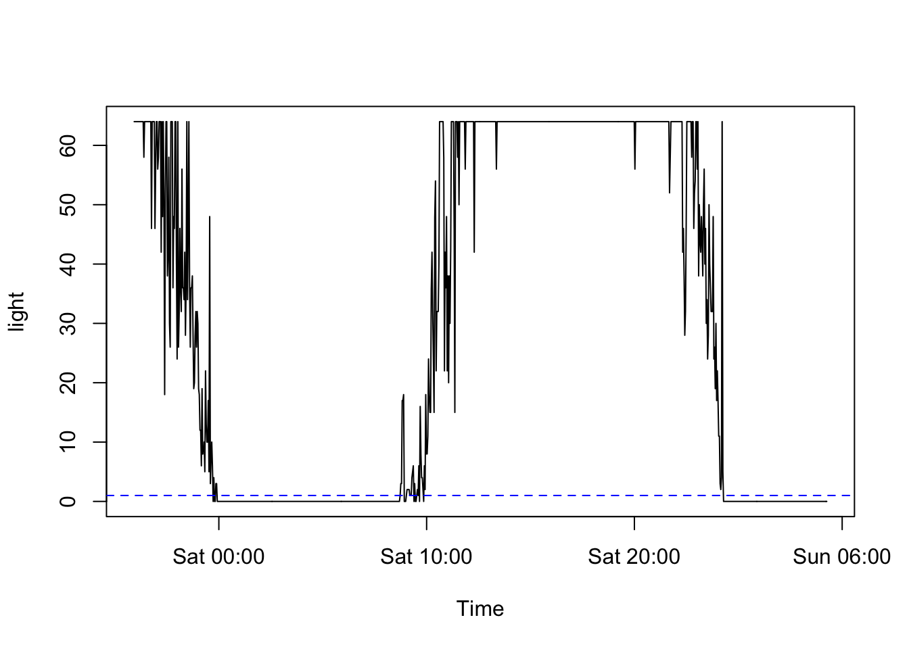
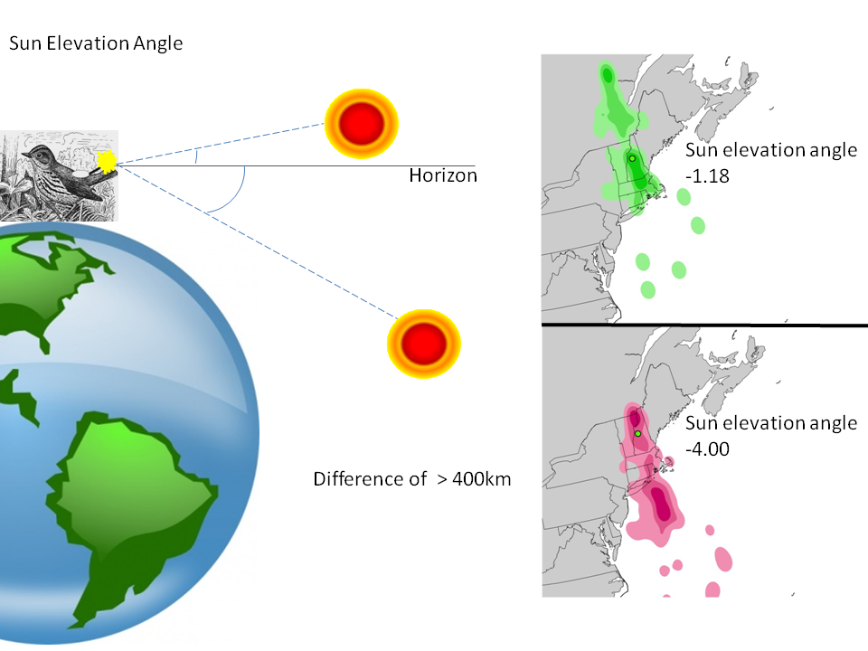
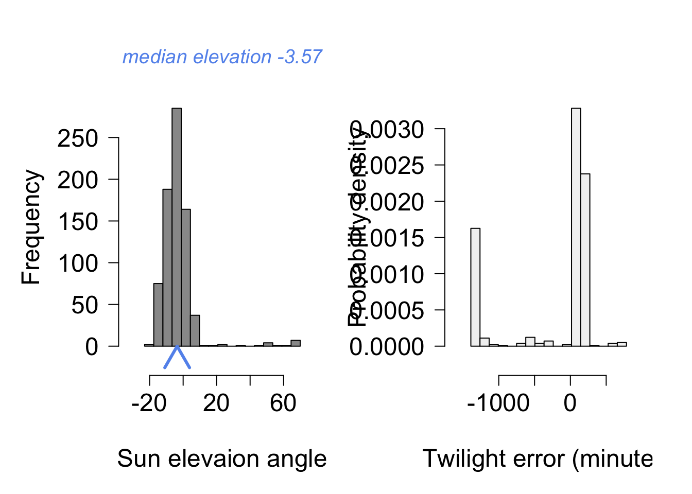
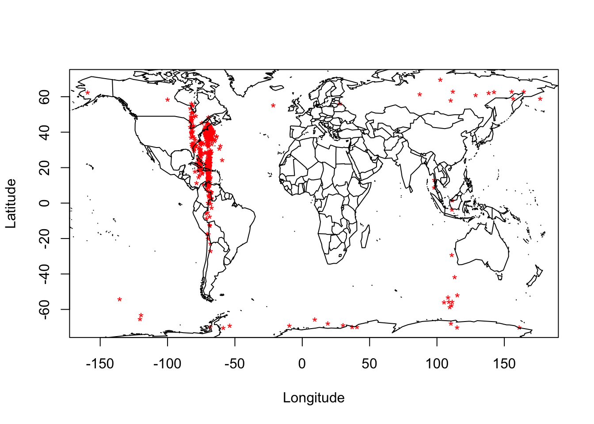
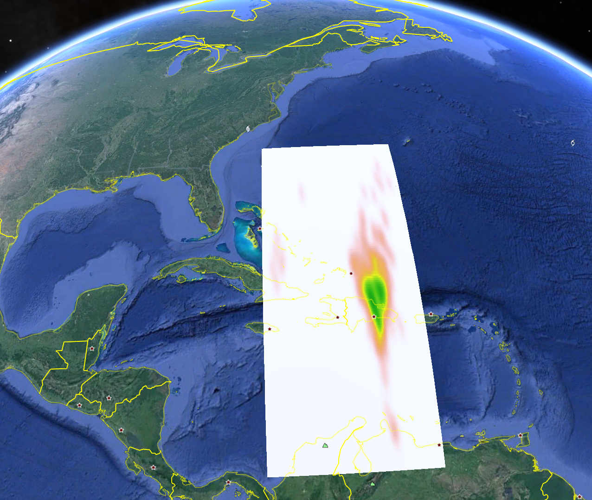

Light-Level geolocator analysis using the GeoLight package
Hallworth, M.T., Cooper, N.W., and B.S. Evans

Introduction to Archival light-level geolocators
The following document outlines the steps for analyzing data from archival light-level geolocators (hereafter geolocators). Geolocators have been used to track individuals since the early 1990s but were restricted to large organisms because of their large size. Recently, with the miniturization of geolocators, researchers are now able to deploy geolocators on smaller and smaller species. Geolocators are devices that record ambient light levels every 2, 5, or 10 min depending on the model. Geolocators are attached to individuals which then migrate with the device while it records ambient light-levels throughout the year. Once recovered, the data are downloaded and analyzed to determine the time of sunrise and sunset. From the sunrise/sunset data the time of relative noon and midnight are determine. Geographical cooridnates are then derived from the relative ‘noon’ and ‘midnight’ times to give an approximate location of where the individual was throughout the year.
This tutorial uses geolocator data from a male Ovenbird (Seiurus aurocapilla) breeding at Hubbard Brook Experimental Forest, NH and a Wood Thrush (Hylocichla mustelina) breeding in Indiana and is part of an ongoing study modeling regional source-sink dynamics of a migratory songbird.
Set up
Let’s start by removing all of the items in your global environment. Do so using the following code:
rm(list = ls())The following R packages need to be loaded to conduct the tutorial:
library(GeoLight)
library(maps)
library(raster)
library(ks)
library(RColorBrewer)
library(RCurl)
library(tidyverse)
The data format of geolocators purchased from different vendors are slightly different and need to be converted into a file format that is recognized by GeoLight. We wrote the custom functions read_lig() to read British Antarctic Survey (.lig) files and read_lightBug() to read the files generated by Lotek Light Bug device files (.txt). To load these functions, run the following script (Note: the code below may take a long time to run if several packages need to be installed.):
source('https://www.dropbox.com/s/t4bxf2olztv8alx/packages_and_setup.R?dl=1')
Note that your global environment now includes the functions read_lig() and read_lightBug(). These functions simply format the files. For the purposes of this tutorial, you do not to need how the functions are constructed, but if you’re curious you can click on their names in the Environment pane to view the details of the functions.
Read in the data
Ovenbird data from British Antarctic Survey:
oven <-
read_lig('https://www.dropbox.com/s/9qr0wl7zb2jdzwt/oven.lig?dl=1') Wood thrush data from Lotek LightBug devices:
woth <-
read_lightBug('https://www.dropbox.com/s/e69h0og3mwdwafv/woth.txt?dl=1') Explore the data:
Take a moment to explore the data … for example, what does each column represent and how is it formatted?
head(oven)## valid dateTime julian light
## 1 ok 2011-06-10 22:37:30 40704.94 64
## 2 ok 2011-06-10 22:39:30 40704.94 64
## 3 ok 2011-06-10 22:41:30 40704.95 64
## 4 ok 2011-06-10 22:43:30 40704.95 64
## 5 ok 2011-06-10 22:45:30 40704.95 64
## 6 ok 2011-06-10 22:47:30 40704.95 64head(woth)## dateTime light
## 1 2011-07-27 00:07:00 236
## 2 2011-07-27 00:14:00 236
## 3 2011-07-27 00:21:00 236
## 4 2011-07-27 00:28:00 236
## 5 2011-07-27 00:35:00 236
## 6 2011-07-27 00:43:00 234str(oven)## 'data.frame': 269864 obs. of 4 variables:
## $ valid : chr "ok" "ok" "ok" "ok" ...
## $ dateTime: POSIXct, format: "2011-06-10 22:37:30" "2011-06-10 22:39:30" ...
## $ julian : num 40705 40705 40705 40705 40705 ...
## $ light : int 64 64 64 64 64 64 64 64 48 50 ...str(woth)## 'data.frame': 56000 obs. of 2 variables:
## $ dateTime: POSIXct, format: "2011-07-27 00:07:00" "2011-07-27 00:14:00" ...
## $ light : int 236 236 236 236 236 234 236 236 236 236 ...Determine transitions
Now that the data are formatted - you can use GeoLight to determine transitions (sunrise/sunset)
In this example - a threshold of 5 was used - a larger or smaller value can be used but it will decrease/increase the number of transitions that need to be scored.
LightThreshold - determines light levels over 5 as “sun has risen/set” and asks you to accept/reject them.
Note - determining the transitions in this file took approx. 45mins - 1hr
The following code produces an interactive plot which asks the user to either accept or reject each light transition that passes over the threshold specified in the code. This document does not support interactive plots but the plot you will see should look similar to the one below. The blue line identifies the threshold level set in the code.
oven_transitions <-
twilightCalc(
datetime = oven[,2],
light= oven[,4],
LightThreshold=3, # Here is where you set the threshold level
ask=FALSE) # Here you can go through every twilight
Exercise One: Using indexing (i.e., data[x, y]), subset the oven data to the first 30 records and assign the nameoven_subto the resultant object. Go through and assign a few twilights to the fileoven_sub.
* How did you decide to either accept or reject twilight events?
* How do you think accepting / rejecting twilight events would influence the end result? * Change the threshold to a higher value - how does that change the number of shading events?
Once you have gone through the process of accepting or rejecting the transition events the data will look like this. tFirst and tSecond correspond to the time of the transitions and type illustrates whether the location will be dervied from relative ‘noon’ or ‘midnight’ locations.
head(oven_transitions)## tFirst tSecond type
## 1 2011-06-11 00:16:10 2011-06-11 08:52:10 2
## 2 2011-06-11 08:52:10 2011-06-11 23:57:30 1
## 3 2011-06-11 23:57:30 2011-06-12 08:57:30 2
## 4 2011-06-12 08:57:30 2011-06-13 00:15:20 1
## 5 2011-06-13 00:15:20 2011-06-13 08:46:10 2
## 6 2011-06-13 08:46:10 2011-06-14 00:12:54 1Sun-elevation angle
The next step is to calculate the sun-elevation angle of a known capture location. The sun-elevation angle is the angle of the sun with respect to the horizon at the time the geolocator light data passed the threshold set by the user. Thus, the sun-elevation angle is unique to the threshold used in the analysis.


Here I chose the dates between deployment of the geolocator and July 31 to ensure that only transitions when the bird was at the capture location were used to calculate the sun-elevation angle.
The coordinates also need to be entered - (X,Y) in that order
This Ovenbird was captured at Hubbard Brook Experimental Forest, NH (-71.45,43.945)
oven_breeding <-
oven_transitions %>%
filter(tFirst < '2012-07-31')
SunElev <-
getElevation(
tFirst = oven_breeding$tFirst,
tSecond = oven_breeding$tSecond,
type = oven_breeding$type,
known.coord = c(-71.45,43.945),
plot=TRUE)
SunElev## med.elev
## -3.57395Location estimates assuming no change in sun elevation angle throughout the year
We can now use the function coord which will estimate the location of observations from consecutive twilights:
ovenLocations <-
coord(
tFirst= oven_transitions$tFirst,
tSecond= oven_transitions$tSecond,
type=oven_transitions$type,
degElevation = SunElev)## Note: Out of 769 twilight pairs, the calculation of 29 latitudes failed (3 %)head(ovenLocations)## lon lat
## [1,] -68.66260 38.91153
## [2,] -66.30430 35.97007
## [3,] -66.94543 35.08806
## [4,] -69.14859 37.83808
## [5,] -67.70630 39.48753
## [6,] -67.37613 39.07447
The values returned are a matrix of lon (longitude) and lat (latitude), as the first and second columns. Let’s convert this object into a data frame and bring in the date of observation:
ovenLocations <-
coord(
tFirst= oven_transitions$tFirst,
tSecond= oven_transitions$tSecond,
type=oven_transitions$type,
degElevation = SunElev) %>%
as.data.frame %>%
bind_cols(
oven_transitions
)## Note: Out of 769 twilight pairs, the calculation of 29 latitudes failed (3 %)head(ovenLocations)## lon lat tFirst tSecond type
## 1 -68.66260 38.91153 2011-06-11 00:16:10 2011-06-11 08:52:10 2
## 2 -66.30430 35.97007 2011-06-11 08:52:10 2011-06-11 23:57:30 1
## 3 -66.94543 35.08806 2011-06-11 23:57:30 2011-06-12 08:57:30 2
## 4 -69.14859 37.83808 2011-06-12 08:57:30 2011-06-13 00:15:20 1
## 5 -67.70630 39.48753 2011-06-13 00:15:20 2011-06-13 08:46:10 2
## 6 -67.37613 39.07447 2011-06-13 08:46:10 2011-06-14 00:12:54 1Plot the location data
Note - We accepted all twilights with the original .lig file. That file includes all transtions the geolocator recorded. Therefore, it may include transitions before it was attached to the bird, or after it was taken off.
ovenLocations %>%
select(lon, lat) %>%
plot(
pch = "*",
col = "red",
xlab = "Longitude",
ylab = "Latitude")
maps::map(
'world',
add = TRUE)
Exercise Two:
There are some extreme outliers in the data. Take a look at the species distribution of the Ovenbird at this link. Use this information (and perhaps Google Earth?) to filter the geolocator output to points that are reasonable (Hint: use the tidyverse function
filter). Assign the nameovenLocations_subto the resultant object.
Create Kernel Density Estimates (KDE) around the stationary periods
Breeding locations were determined using location data described earlier in determining the sun-elevation angle. The non-breeding period determined as 1 November - 3 March (the start of spring Equinox period). See Hallworth et al. 2015 for details.
breeding_oven <-
ovenLocations_sub %>%
filter(tFirst <= '2011-07-31')
NB_oven <-
ovenLocations_sub %>%
filter(
tFirst >= '2011-11-01',
tFirst <= '2012-03-03'
)Determine bandwidth for the Kernel density estimate - the bandwidth parameter sets the ‘smoothness’ of the KDE. The bandwidth was estimated using least-square cross validation.
Bwidth <-
Hlscv(breeding_oven[,1:2])
NBwidth <-
Hlscv(NB_oven[,1:2])The following script creates the KDE and converts the KDE to a raster:
Breeding_KDE <-
breeding_oven[,1:2] %>%
kde(H = Bwidth) %>%
raster
NonBreeding_KDE <-
NB_oven[,1:2] %>%
kde(H = NBwidth) %>%
rasterViewing the kernel density estimates:
At this point, let’s save these rasters as KML files and view our kernel density estimates in Google Earth:
For better viewing, we can set values with a KDE of close to zero as below:
Breeding_KDE[values(Breeding_KDE) < 0.01] <-
NA
NonBreeding_KDE[values(NonBreeding_KDE) < 0.01] <-
NAKML(
Breeding_KDE,
'breeding_kde.kml',
overwrite = TRUE)
KML(
NonBreeding_KDE,
'nonBreeding_kde.kml',
overwrite = TRUE)
Exercise Three:
Calculate the mean and median (
median()) location for the non-breeding period (Nov 1 - March 31).
- Do your conclusions about where the bird wintered change based on how you summarize the data (mean, median, kernel density estimate)?
- How might your conclusions change if the bird wintered in South America and not in the Caribbean. Would the way you present the data change your conclusions about where the bird wintered?
Using different sun-elevation angles for different periods of the annual cycle
Notice in the above figure how the non-breeding KDE is over the Caribbean. The sun-elevation angle (described above) can make a big difference in the latitude of the locations. The sun-elevation angle can be influenced by a variatey of factors such as habitat type, topography, weather, and bird behavior. Thus, using multiple sun-elevation angles for different portions of the year may be justified. The following code demonstrates how the sun-elevation angle for different portions of the year can be determined. Few studies have in-habitat calibrations for both breeding and non-breeding periods of the year (but see Hallworth et al. 2015, Stanley et al. 2014, McKinnon et al. 2013). Thus the sun-elevation angle for different portions of the year need to be estimated. In GeoLight there is a function called HillEkstromCalib which determines the sun-elevation angle based on the transition events in the data.
Exercise Four (take “home”):
Repeat the above geolocator analysis for the Wood thrush. * What is your best estimate of where the observed Wood thrush spends the non-breeding period? * Provide a map of your kernel density estimates for the breeding and non-breeding periods.